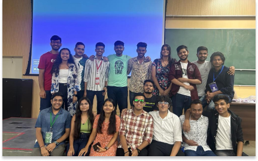

About Us
Cinema Club organizes screening of latest movies at the Convocation Hall with a size of around 1800 seats with the best projector in the city. The screening (Which are free of cost,by the way) are met with much fanfare in a convo bottled down to its full capacity


